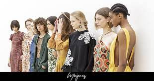
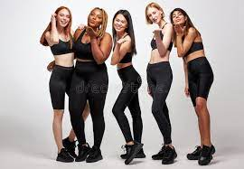
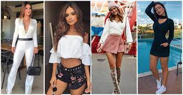

La moda surge como medio de expresión, comunicación e identificación social. La sociedad habla directamente con sus vestidos, sus colores, con la diversidad de los estilos que aparecen cada temporada. La moda lleva en si el cambio a nivel personal y grupal que se da en los patrones cotidianos de las sociedades contemporáneas. En el siglo XIV se comienza a tener un concepto de moda, la aparicion de la moda como tal surge cuando la sociedad deja de concentrarse en la tradicion mirando continuamente hacia el pasado y le concede un lugar privilegiado a las nuevas formas y costumbres, a partir de entonces ha habido diferentes diseñadores y prendas que han marcado época. Las épocas cambian, la gente cambia y la moda es una de las formas de reflejar esos cambios, adaptándose a ellos para vivir y sobrellevarlos mejor. La moda actual trata de romper esquemas, estigmatizaciones, convencionalismos supliendo la necesidad de ser libres, más reales. La moda puede reflejarse en ciertos objetos o aspectos visibles (ropa, peinados, entre otros.), pero también en modos de actuar y comportamientos (escuchar un estilo de música, acudir a un cierto restaurante, ir de vacaciones a un determinado destino).
Las celebridades que más han influido en cuanto a un vestuario o peinado son Marilyn Monroe y Jacky Kennedy. Por lo general las celebridades son quienes imponen una moda. Si una estrella de Hollywood se muestra en un evento con un vestido de color rosa, es probable que millones de mujeres quieran comprar y utilizar el mismo vestido. De esa manera se construye poco a poco la tendencia que se convierte en moda.
Moda Deportiva: La moda deportiva engloba el desarrollo de nuevos textiles que favorecen el desempeño de los deportistas, pero a la vez se suma un valor estético en cada una de las prendas a partir de colores y diseños súper atractivos para los consumidores.
Moda Casual: Este tipo de moda está ligado a la casualidad, un estilo informal donde no existen normas o criterios de elegancia o seriedad. La moda casual incluye prendas cómodas como el jean, el pantalón deportivo, camisetas y buzos.
Moda de alta Costura: Generalmente en la moda de alta costura se utilizan textiles costosos y sofisticados, que suelen ser elaborados de manera artesanal. Entre las prendas de alta costura podemos encontrar los vestidos y prendas de vestir de gala y con diseños exclusivos. Al momento de confeccionar prendas de alta costura, el diseñador debe contemplar diferentes aspectos como el valor estético de la prenda, el estilo de la persona que la va a lucir y el lugar donde se lucirá esa prenda.
|
|
|---|